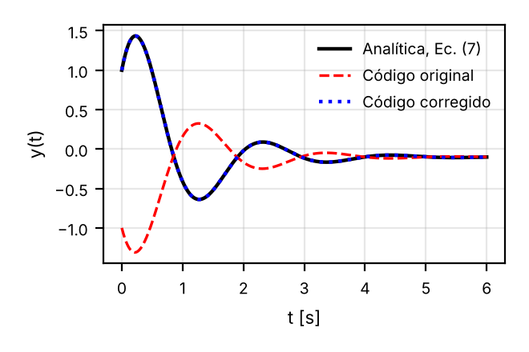
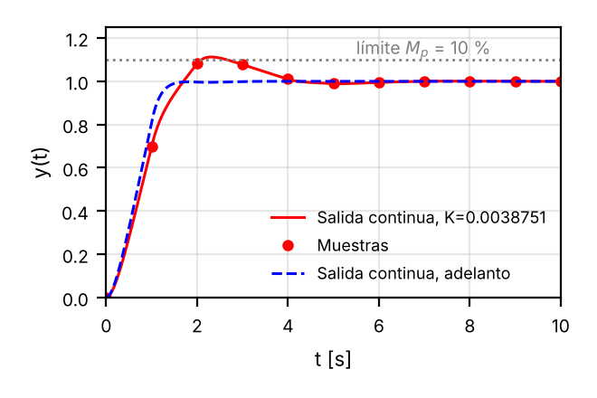
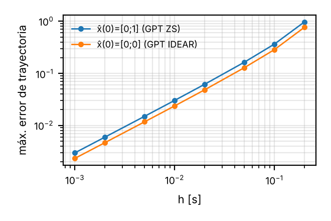

Esta página reúne el material que respalda el artículo: los prompts enviados, las 25 respuestas obtenidas de ChatGPT y Gemini, su evaluación frente a una verificación independiente y los guiones para reproducirla. Cada valor de referencia puede comprobarse con verificacion.py.
Método
| Corrida | Fecha | Condición | ChatGPT (cuenta Plus) | Gemini (cuenta educativa) |
|---|---|---|---|---|
| 1 | agosto–septiembre de 2026 | Zero-shot | GPT-5.6 Sol, razonamiento alto | 3.6 Thinking (retirado por el proveedor) |
| 2 | noviembre de 2026 | Zero-shot | — (se usa la corrida 1) | Hydrogen Thinking |
| 2 | noviembre de 2026 | IDEAR | GPT-5.6 Sol, razonamiento alto | Hydrogen Thinking |
- Interfaz web de cada proveedor; una conversación nueva por respuesta, sin preguntas de seguimiento; una ejecución por combinación (25 respuestas).
- El enunciado se adjuntó como imagen. Zero-shot: «Resuelve este problema». IDEAR: el texto de la sección Prompts.
- Al final de cada conversación se pidió al sistema un documento con su solución y los metadatos de la sesión; esos documentos son los PDF publicados aquí.
- Criterios: exactitud del resultado (cada valor solicitado coincide con la referencia) y validez del procedimiento (sin errores ni afirmaciones falsas sobre su propio resultado). Tolerancias: residuo simbólico nulo; error máximo < 10⁻⁸ en simulaciones; error relativo < 10⁻³ en ganancias, polos y frecuencias.
Nota de corrección. Una versión previa del artículo indicaba que las respuestas originales se obtuvieron con IDEAR. En realidad se obtuvieron con el prompt zero-shot; la condición IDEAR se añadió en la corrida 2. En ChatGPT, ambas condiciones se ejecutaron en meses distintos con el mismo modelo nominal.
Prompts
Zero-shot (todas las corridas): imagen del enunciado y el texto
Resuelve este problema
IDEAR: cinco componentes adaptados de patrones de prompt publicados (White et al., 2023; Schulhoff et al., 2024). Los prompts se enviaron sin etiquetas, en el orden Identidad, Destinatario, Estructura, Referencia y Acción. El texto de cada problema aparece en su sección y al inicio de cada respuesta IDEAR. Única variación: en la conversación de Gemini del problema e), la Acción aparece dos veces, antes y después de la Referencia. Descargas: prompts enviados (.txt) · protocolo de aplicación (.md).
La Referencia del problema c) pedía reportar valores obtenidos de la respuesta al escalón y no de aproximaciones de segundo orden; esa instrucción pudo favorecer a la condición IDEAR en ese problema.
Respuestas por problema
✓ correcto · ✓* correcto con observación · ✗ incorrecto. Los PDF se abren en una pestaña nueva.
a) Ecuaciones diferenciales ordinarias
Enunciado. Obtener, por coeficientes indeterminados, la forma de una solución particular de (D² − 2D − 3)y = x sen 2x + x³e³ˣ.
- yp = (Ax + B) cos 2x + (Cx + D) sen 2x + x e3x(Ex³ + Fx² + Gx + H) (el término e3x es resonante y se multiplica por x).
- Coeficientes (no solicitados): A = 4/65, B = −244/4225, C = −7/65, D = −158/4225, E = 1/16, F = −1/16, G = 3/64, H = −3/128. Residuo simbólico nulo.
| Corrida | Sistema y modelo | Condición | Fecha | Evaluación | Observación | Respuesta |
|---|---|---|---|---|---|---|
| 1 | ChatGPT · GPT-5.6 Sol | Zero-shot | ago 2026 | ✓ | Forma correcta; calcula además los coeficientes por desplazamiento del operador. | |
| 1 | Gemini · 3.6 Thinking | Zero-shot | ago–sep 2026 | ✓ | Forma correcta; no calcula coeficientes. | |
| 2 | Gemini · Hydrogen Thinking | Zero-shot | nov 2026 | ✓ | Forma correcta; no calcula coeficientes. | |
| 2 | ChatGPT · GPT-5.6 Sol | IDEAR | nov 2026 | ✓ | Forma y coeficientes correctos; verificación simbólica en MATLAB. | |
| 2 | Gemini · Hydrogen Thinking | IDEAR | nov 2026 | ✓ | Forma y coeficientes correctos. |
Prompt IDEAR enviado en este problema
Eres profesor de Matemáticas Avanzadas en un posgrado de ingeniería en control automático. Escribe para un estudiante de primer semestre de maestría que ya cursó ecuaciones diferenciales ordinarias en licenciatura. Justifica cada paso que no sea una operación algebraica elemental. - Organiza la respuesta por inciso, con el mismo orden y nombre que en el enunciado. - Escribe una ecuación por línea. - Responde exactamente lo que pide el enunciado. - Termina con una tabla resumen con el resultado de cada inciso. - Incluye al final un bloque de código MATLAB que verifique los resultados, ejecutable sin modificaciones, y reporta el valor de todos los parámetros numéricos que utilice. Usa la notación de operadores D = d/dx y el método de coeficientes indeterminados (enfoque del anulador) como en Zill, Ecuaciones diferenciales con aplicaciones de modelado. Si algún término de la forma propuesta coincide con la solución homogénea, indícalo explícitamente. Resuelve el problema de la imagen adjunta.
b) Transformada de Laplace
Enunciado. Para ÿ + 2ẏ + 10y = u̇ − u con y(0⁻) = 1, ẏ(0⁻) = 3 y u escalón unitario: respuestas de entrada cero, de estado cero y total, y comprobación con lsim.
- yec(t) = e−t[cos 3t + (4/3) sen 3t]
- yez(t) = −1/10 + e−t[(1/10) cos 3t + (11/30) sen 3t]
- yT(t) = −1/10 + e−t[(11/10) cos 3t + (17/10) sen 3t]; y(0⁺) = 1, ẏ(0⁺) = 4.
- Con x₁ = y, x₂ = ẏ − u: A = [0 1; −10 −2], B = [1; −3], C = [1 0], x(0) = [1; 3]; error máximo frente a lsim 2.6×10⁻¹⁴.
| Corrida | Sistema y modelo | Condición | Fecha | Evaluación | Observación | Respuesta |
|---|---|---|---|---|---|---|
| 1 | ChatGPT · GPT-5.6 Sol | Zero-shot | ago 2026 | ✓ | Analítico correcto; código con x₂ = ẏ − u y x(0) = [1; 3]. | |
| 1 | Gemini · 3.6 Thinking | Zero-shot | ago–sep 2026 | ✓ / ✗ | Analítico correcto; el código se ejecuta pero x(0) corresponde a otra realización: respuestas de entrada cero y total incorrectas (ver caso documentado). | |
| 2 | Gemini · Hydrogen Thinking | Zero-shot | nov 2026 | ✓ | Analítico correcto; código con x0 = obsv(sys)\[1;3]. | |
| 2 | ChatGPT · GPT-5.6 Sol | IDEAR | nov 2026 | ✓ | Analítico correcto; misma realización que el zero-shot. | |
| 2 | Gemini · Hydrogen Thinking | IDEAR | nov 2026 | ✓ | Analítico correcto; forma canónica observable con x(0) = [1; 5]. |
Prompt IDEAR enviado en este problema
Eres profesor de Matemáticas Avanzadas en un posgrado de ingeniería en control automático. Escribe para un estudiante de primer semestre de maestría que ya cursó ecuaciones diferenciales y conoce la transformada de Laplace. Justifica cada paso que no sea una operación algebraica elemental. - Organiza la respuesta por inciso, con el mismo orden y nombre que en el enunciado. - Escribe una ecuación por línea. - Responde exactamente lo que pide el enunciado. - Termina con una tabla resumen con el resultado de cada inciso. - Incluye al final un bloque de código MATLAB que verifique los resultados, ejecutable sin modificaciones, y reporta el valor de todos los parámetros numéricos que utilice (intervalo de tiempo, paso, condiciones iniciales y matrices empleadas). Las condiciones iniciales están definidas en t = 0⁻ y la entrada u(t) es un escalón unitario aplicado en t = 0. Usa la transformada unilateral de Laplace con la convención de Ogata, Ingeniería de control moderna. Resuelve el problema de la imagen adjunta.
Caso documentado: condiciones iniciales entre realizaciones
Como u̇ = δ(t), la derivada de la salida salta: y(0⁺) = 1 y ẏ(0⁺) = 4, mientras que el problema define las condiciones en t = 0⁻. Con la realización x₁ = y, x₂ = ẏ − u, el estado no salta (x₂(0⁻) = 3 − 0 = x₂(0⁺) = 4 − 1), por lo que x(0) = [1; 3] es válido con ambas convenciones.
Gemini 3.6 Thinking construyó la realización con ss(tf(...)), pero calculó x(0) para otra realización que solo describió en un comentario. El código se ejecuta sin errores; la respuesta de estado cero es correcta (no depende de x(0)), pero la total arranca en y(0) ≠ 1, con error máximo de 1.8 a 2.7 según la realización que construya la versión de MATLAB.
% Código original (Gemini 3.6 Thinking)
sys_tf = tf([1, -1], [1, 2, 10]);
sys_ss = ss(sys_tf);
% y = -x1 + x2 --> C = [-1 1]
x0 = [-6/13; 7/13];
y_total_sim = lsim(sys_ss, u, t, x0);
% Corrección (independiente de la realización; válida porque D = 0 y u(0-) = 0)
x0 = obsv(sys_ss) \ [1; 3];
c) Transformada Z
Enunciado. Para Gp(s) = 1125/[s(s + 5)] con retenedor de orden cero y T = 1 s: equivalente discreto, análisis del lazo cerrado y controlador con Mp ≤ 10 %, ts ≤ 5 s (2 %), ess = 0 y tr mínimo; diseño analógico equivalente.
- G(z) = (180.3032 z + 43.1808)/(z² − 1.006738 z + 0.006738); sin controlador, polos en −179.06 y −0.2412 (inestable).
- C(z) = 0.0038751: polos 0.1540 ± j0.3877 (|z| = 0.4172); Mp = 8.13 % en las muestras y 11.20 % entre muestras; ts = 4 s.
- C(s) = 0.0158974: Mp = 10 %, ts = 1.401 s, tr = 0.433 s.
| Corrida | Sistema y modelo | Condición | Fecha | Evaluación | Observación | Respuesta |
|---|---|---|---|---|---|---|
| 1 | ChatGPT · GPT-5.6 Sol | Zero-shot | ago 2026 | ✓* | K = 0.0038751 y Ka = 0.0158974; cumple Mp solo en las muestras (11.20 % entre muestras). | |
| 1 | Gemini · 3.6 Thinking | Zero-shot | ago–sep 2026 | ✓* | Kd = 0.0035 y Ka = 0.0154; diseño válido (6.85 % entre muestras), pero reporta aproximaciones de 2.º orden (7.2 %, 4.3 s) como valores simulados (6.55 %, 5 s). | |
| 2 | Gemini · Hydrogen Thinking | Zero-shot | nov 2026 | ✓ | Compensadores de adelanto; cumple también entre muestras (Mp ≈ 0 %, ts = 2 s). | |
| 2 | ChatGPT · GPT-5.6 Sol | IDEAR | nov 2026 | ✓* | K = 0.004 y Ka = 0.0155; Mp = 9.99 % en muestras, 12.63 % entre muestras. | |
| 2 | Gemini · Hydrogen Thinking | IDEAR | nov 2026 | ✓* | K = 0.0038 y Ka = 0.015432; Mp = 7.62 % en muestras, 10.33 % entre muestras. |
Prompt IDEAR enviado en este problema
Eres profesor de Matemáticas Avanzadas en un posgrado de ingeniería en control automático. Escribe para un estudiante de primer semestre de maestría que ya cursó control clásico en tiempo continuo pero no sistemas en tiempo discreto. Justifica cada paso que no sea una operación algebraica elemental. - Organiza la respuesta por inciso, con el mismo orden y nombre que en el enunciado. - Escribe una ecuación por línea. - Responde exactamente lo que pide el enunciado. - Termina con una tabla resumen con el resultado de cada inciso. - Incluye al final un bloque de código MATLAB que verifique los resultados, ejecutable sin modificaciones, y reporta el valor de todos los parámetros numéricos que utilice. Usa retenedor de orden cero, la notación de Ogata, Sistemas de control en tiempo discreto, y el criterio de asentamiento del 2 %. Los valores de sobrepaso y tiempo de asentamiento que reportes deben corresponder a la respuesta al escalón del sistema en lazo cerrado, no sólo a una aproximación de segundo orden; si usas una aproximación, indícalo. Resuelve el problema de la imagen adjunta.
Caso documentado: comportamiento entre muestras
| Diseño | Controlador | Mp en muestras | Mp continua | ts (muestras) |
|---|---|---|---|---|
| ChatGPT zero-shot | C(z) = 0.0038751 | 8.13 % | 11.20 % | 4 s |
| ChatGPT IDEAR | C(z) = 0.004 | 9.99 % | 12.63 % | 4 s |
| Gemini Hydrogen IDEAR | C(z) = 0.0038 | 7.62 % | 10.33 % | 4 s |
| Gemini 3.6 zero-shot | C(z) = 0.0035 | 6.55 % | 6.85 % | 5 s |
| Gemini Hydrogen zero-shot | C(z) = 0.0045(z − 0.006738)/(z + 0.20) | 0.00 % | ≈ 0 % | 2 s |

d) Espacio de estado
Enunciado. Para A = [−3 1; −2 0], B = [1; −2], C = [1 0]: controlabilidad y observabilidad; K para polos en −2 ± 2j; observador de orden completo con polos en −3 y −4; simulación por Euler; principio de separación.
- det[B AB] = −12, det[C; CA] = 1; K = [−1/3 −2/3], L = [4; 10].
- Eigenvalores del sistema aumentado {−2 ± 2j, −3, −4}; Y(s)/R(s) = (s − 2)/(s² + 4s + 8).
- Con u = r − Kx̂ la salida tiende a y(∞) = −0.25 (falta precompensación).
| Corrida | Sistema y modelo | Condición | Fecha | Evaluación | Observación | Respuesta |
|---|---|---|---|---|---|---|
| 1 | ChatGPT · GPT-5.6 Sol | Zero-shot | ago 2026 | ✓ | Advierte y(∞) = −0.25; Euler h = 10⁻³ s, x̂(0) = [0; 1]. | |
| 1 | Gemini · 3.6 Thinking | Zero-shot | ago–sep 2026 | ✓* | No advierte y(∞) = −0.25. | |
| 2 | Gemini · Hydrogen Thinking | Zero-shot | nov 2026 | ✓* | No advierte y(∞) = −0.25; Euler h = 10⁻³ s, x(0) = [2; −1]. | |
| 2 | ChatGPT · GPT-5.6 Sol | IDEAR | nov 2026 | ✓ | Advierte y(∞) = −0.25; Euler h = 10⁻³ s, x̂(0) = [0; 0]. | |
| 2 | Gemini · Hydrogen Thinking | IDEAR | nov 2026 | ✓ | Advierte y(∞) = −0.25; Euler h = 10⁻³ s, x(0) = [2; −1]. |
Prompt IDEAR enviado en este problema
Eres profesor de Matemáticas Avanzadas en un posgrado de ingeniería en control automático. Escribe para un estudiante de primer semestre de maestría que ya cursó control clásico y álgebra lineal, pero no control en espacio de estado. Justifica cada paso que no sea una operación algebraica elemental. - Organiza la respuesta por inciso, con el mismo orden y nombre que en el enunciado. - Escribe una ecuación por línea. - Responde exactamente lo que pide el enunciado. - Termina con una tabla resumen con el resultado de cada inciso. - Incluye al final un bloque de código MATLAB que verifique los resultados, ejecutable sin modificaciones, y reporta el valor de todos los parámetros numéricos que utilice (paso de integración, intervalo de tiempo, referencia y condiciones iniciales del sistema y del estimador). Usa la notación de Ogata, Ingeniería de control moderna: u = r − K x̂ y estimador de orden completo x̂' = A x̂ + B u + L (y − C x̂). Usa la ley de control exactamente como está planteada en el enunciado. Resuelve el problema de la imagen adjunta.
Caso documentado: dependencia del paso de integración
| Paso h | Máx. error de trayectoria en [0, 10] s | ‖x − x̂‖ < 10⁻¹⁰ desde |
|---|---|---|
| 0.1 s | 0.37 | 7.40 s |
| 0.01 s | 0.030 | 8.56 s |
| 0.001 s | 0.0030 | 8.67 s |
| Solución exacta | — | 8.68 s |
x(0) = [1; −1], x̂(0) = [0; 1], r = 1, u = r − Kx̂. Solución exacta por exponencial de matriz.

e) Respuesta en frecuencia
Enunciado. Para L(s) = Kc/[s(s + 2)(s + 3)]: Kc para margen de fase de 60°, para margen de ganancia de 2 y para módulo máximo de lazo cerrado de +2 dB; ganancia y frecuencia últimas.
- MF = 60°: Kc = 4.1578 (ωc = 0.6448 rad/s).
- MG = 2: Kc = 15 (ω = √6 rad/s).
- Mr = +2 dB: Kc = 6.6110 (ωr = 1.0171 rad/s).
- Ku = 30, ωu = √6 = 2.4495 rad/s.
| Corrida | Sistema y modelo | Condición | Fecha | Evaluación | Observación | Respuesta |
|---|---|---|---|---|---|---|
| 1 | ChatGPT · GPT-5.6 Sol | Zero-shot | ago 2026 | ✓ | Todos los incisos correctos; fzero en el intervalo [0.1, 3]. | |
| 1 | Gemini · 3.6 Thinking | Zero-shot | ago–sep 2026 | ✓ | Todos los incisos correctos; fzero con valor inicial 6. | |
| 2 | Gemini · Hydrogen Thinking | Zero-shot | nov 2026 | ✓ | Todos los incisos correctos. | |
| 2 | ChatGPT · GPT-5.6 Sol | IDEAR | nov 2026 | ✓ | Todos los incisos correctos. | |
| 2 | Gemini · Hydrogen Thinking | IDEAR | nov 2026 | ✓ | Todos los incisos correctos. |
Prompt IDEAR enviado en este problema
Eres profesor de Matemáticas Avanzadas en un posgrado de ingeniería en control automático. Escribe para un estudiante de primer semestre de maestría que ya cursó control clásico en tiempo continuo. Justifica cada paso que no sea una operación algebraica elemental. - Organiza la respuesta por inciso, con el mismo orden y nombre que en el enunciado. - Escribe una ecuación por línea. - Responde exactamente lo que pide el enunciado. - Termina con una tabla resumen con el resultado de cada inciso, incluyendo la frecuencia asociada a cada ganancia. - Incluye al final un bloque de código MATLAB que verifique los resultados, ejecutable sin modificaciones, y reporta el valor de todos los parámetros numéricos que utilice. Usa la notación de Ogata, Ingeniería de control moderna: margen de fase, margen de ganancia, máximo módulo de lazo cerrado Mr en dB y carta de Nichols. Expresa el margen de ganancia como cociente (no en dB) salvo que el enunciado indique otra cosa. Resuelve el problema de la imagen adjunta.
Evaluación global
| Problema | ChatGPT zero-shot | Gemini 3.6 zero-shot | Gemini H zero-shot | ChatGPT IDEAR | Gemini H IDEAR |
|---|---|---|---|---|---|
| a) Ecuaciones diferenciales ordinarias | ✓ | ✓ | ✓ | ✓ | ✓ |
| b) Transformada de Laplace | ✓ | ✓ / ✗ | ✓ | ✓ | ✓ |
| c) Transformada Z | ✓* | ✓* | ✓ | ✓* | ✓* |
| d) Espacio de estado | ✓ | ✓* | ✓* | ✓ | ✓ |
| e) Respuesta en frecuencia | ✓ | ✓ | ✓ | ✓ | ✓ |
- IDEAR no cambió la exactitud de ningún resultado; hizo las respuestas más fáciles de auditar (parámetros reportados, tabla resumen).
- El error de condiciones iniciales de Gemini 3.6 no aparece en Gemini Hydrogen con ninguno de los dos prompts.
- Con una ejecución por combinación, estos resultados describen casos y no permiten estimar efectos ni comparar proveedores.
Verificación independiente
Los valores de referencia se calcularon con Python 3.13 (SymPy 1.14, NumPy 2.5, SciPy 1.18, python-control 0.10). El guion reproduce todas las cifras y las tres figuras de esta página; su salida completa está publicada.
verificacion.pySalida de la verificación (.txt)Versión MATLAB (.m)
Ejecución: pip install sympy numpy scipy control matplotlib y después python verificacion.py.
Cómo citar
Chamú Ramírez, K. y Quintero-Mármol Márquez, E. (2026). The use of Generative Artificial Intelligence in advanced mathematics courses. En Memorias del 4.º Congreso CITCA. Material suplementario: [DOI de Zenodo].